Chapitre VII — Trame, Mue, Hebdo
Pages 063 à 092 du livre · chapitre 7 sur 8
Chapitre VII de La Livrée d'Hermès : Trame, Mue et Hebdo. La géomancie et l'ordre chronologique des hexagrammes, les axes de symétrie et le yin et le yang d'un motif, le tirage et les superpositions de calques.
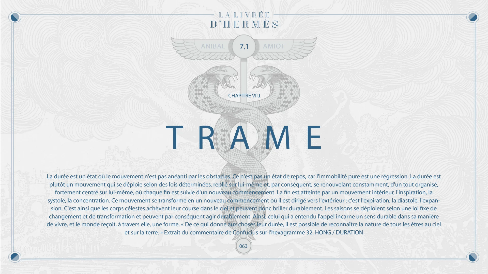
7.1
CHAPITRE VII.I
TRAME
ANIBAL
AMIOT
La durée est un état où le mouvement n'est pas anéanti par les obstacles. Ce n'est pas un état de repos, car l'immobilité pure est une régression. La durée est plutôt un mouvement qui se déploie selon des lois déterminées, replié sur lui-même et, par conséquent, se renouvelant constamment, d'un tout organisé, fortement centré sur lui-même, où chaque fin est suivie d'un nouveau commencement. La fin est atteinte par un mouvement intérieur, l'inspiration, la systole, la concentration. Ce mouvement se transforme en un nouveau commencement où il est dirigé vers l'extérieur : c'est l'expiration, la diastole, l'expansion. C'est ainsi que les corps célestes achèvent leur course dans le ciel et peuvent donc briller durablement. Les saisons se déploient selon une loi fixe de changement et de transformation et peuvent par conséquent agir durablement. Ainsi, celui qui a entendu l'appel incarne un sens durable dans sa manière de vivre, et le monde reçoit, à travers elle, une forme. « De ce qui donne aux choses leur durée, il est possible de reconnaître la nature de tous les êtres au ciel et sur la terre. » Extrait du commentaire de Confucius sur l’hexagramme 32, HONG / DURATION
063
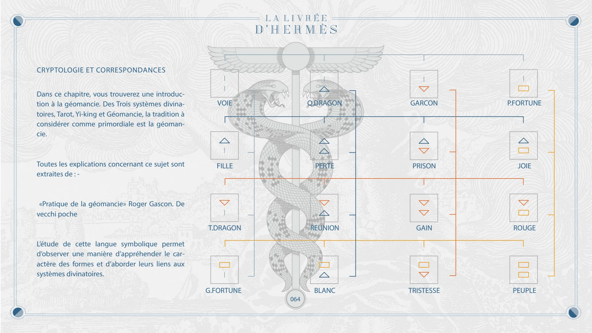
CRYPTOLOGIE ET CORRESPONDANCES
Dans ce chapitre, vous trouverez une introduction à la géomancie. Des Trois systèmes divinatoires, Tarot, Yi-king et Géomancie, la tradition à considérer comme primordiale est la géomancie.
VOIE
Q.DRAGON
GARCON
P.FORTUNE
Toutes les explications concernant ce sujet sont extraites de : -
FILLE
PERTE
PRISON
JOIE
«Pratique de la géomancie» Roger Gascon. De vecchi poche
T.DRAGON
REUNION
GAIN
ROUGE
L’étude de cette langue symbolique permet d’observer une manière d’appréhender le caractère des formes et d’aborder leurs liens aux systèmes divinatoires.
G.FORTUNE
064
BLANC
TRISTESSE
PEUPLE
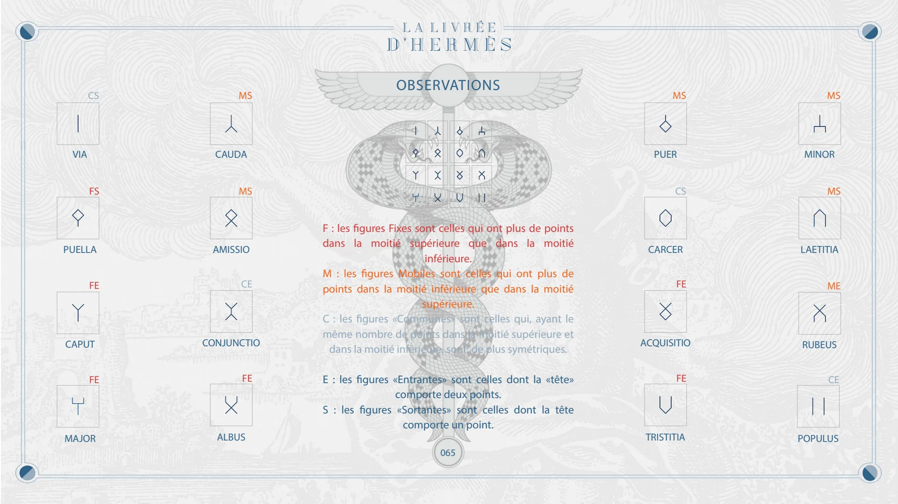
OBSERVATIONS
CS VIA FS
PUELLA
FE
CAPUT
MS
CAUDA
MS
AMISSIO
CE
CONJUNCTIO
F : les figures Fixes sont celles qui ont plus de points dans la moitié supérieure que dans la moitié inférieure. M : les figures Mobiles sont celles qui ont plus de points dans la moitié inférieure que dans la moitié supérieure. C : les figures «Communes» sont celles qui, ayant le même nombre de points dans la moitié supérieure et dans la moitié inférieure, sont, de plus symétriques.
MS
PUER
CS
CARCER
FE
ACQUISITIO
MS
MINOR
MS
LAETITIA
ME
RUBEUS
FE FE
ALBUS
E : les figures «Entrantes» sont celles dont la «tête» comporte deux points. S : les figures «Sortantes» sont celles dont la tête comporte un point.
FE
TRISTITIA
CE
MAJOR
065
POPULUS
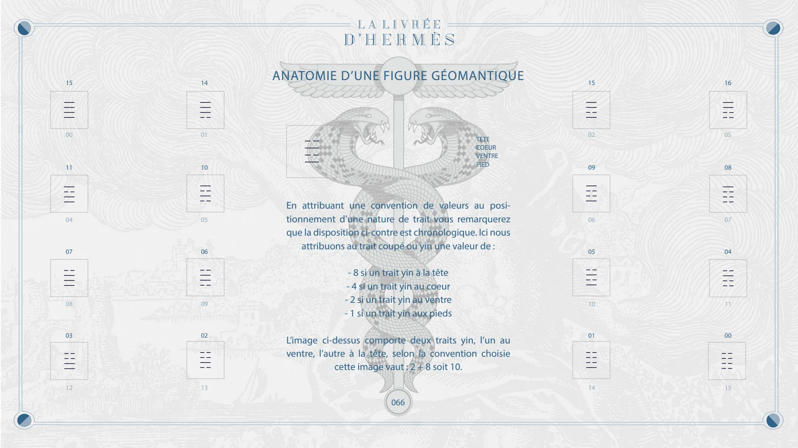
ANATOMIE D’UNE FIGURE GÉOMANTIQUE
15 00 11 04 07 14 01 10 05 06
TETE COEUR VENTRE PIED
En attribuant une convention de valeurs au positionnement d’une nature de trait vous remarquerez que la disposition ci-contre est chronologique. Ici nous attribuons au trait coupé ou yin une valeur de :
15 02 09 06 05 16 05 08 07 04 08 09
- 8 si un trait yin à la tête - 4 si un trait yin au coeur - 2 si un trait yin au ventre - 1 si un trait yin aux pieds
10 11 03 02
L’image ci-dessus comporte deux traits yin, l’un au ventre, l’autre à la tête, selon la convention choisie cette image vaut : 2 + 8 soit 10.
01 00 12 13 066 14 15
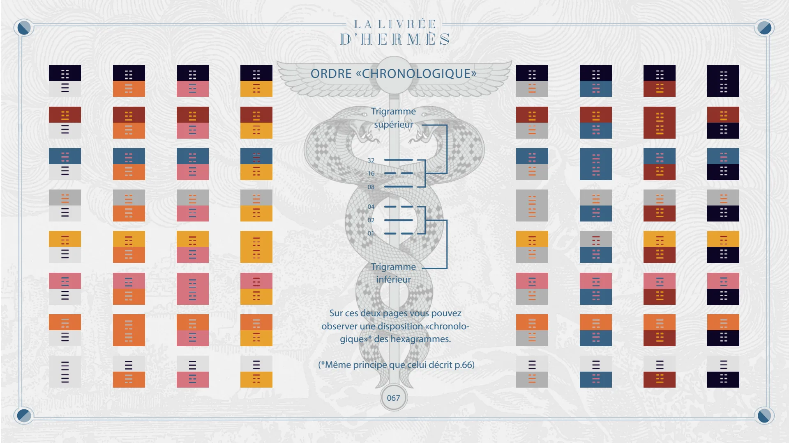
ORDRE «CHRONOLOGIQUE»
Trigramme supérieur 32 16 08 04 02 01 Trigramme inférieur
Sur ces deux pages vous pouvez observer une disposition «chronologique»* des hexagrammes.
(*Même principe que celui décrit p.66)
067
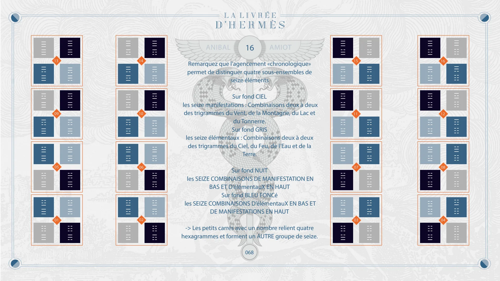
16 13 14
ANIBAL
AMIOT
Remarquez que l’agencement «chronologique» permet de distinguer quatre sous-ensembles de seize éléments
15 16 09 10
Sur fond CIEL les seize manifestations : Combinaisons deux à deux des trigrammes du Vent, de la Montagne, du Lac et du Tonnerre. Sur fond GRIS les seize élémentaux : Combinaisons deux à deux des trigrammes du Ciel, du Feu, de l’Eau et de la Terre.
11 12 05 06
Sur fond NUIT les SEIZE COMBINAISONS DE MANIFESTATION EN BAS ET D’élémentauX EN HAUT Sur fond BLEU FONCé les SEIZE COMBINAISONS D’élémentauX EN BAS ET DE MANIFESTATIONS EN HAUT
07 08 01 02
-> Les petits carrés avec un nombre relient quatre hexagrammes et forment un AUTRE groupe de seize.
03 04 068
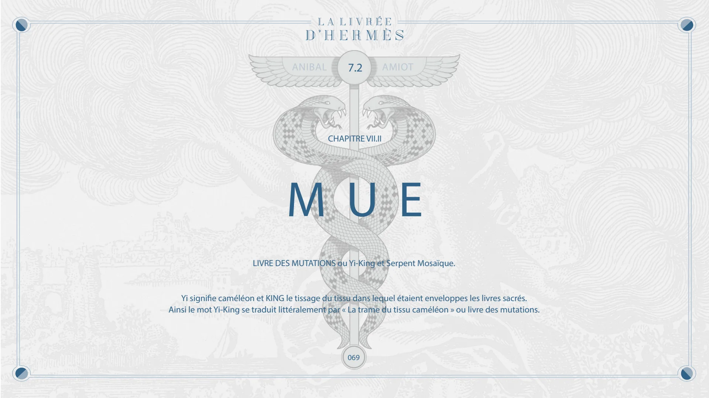
7.2
CHAPITRE VII.II
MUE
ANIBAL
AMIOT
LIVRE DES MUTATIONS ou Yi-King et Serpent Mosaïque.
Yi signifie caméléon et KING le tissage du tissu dans lequel étaient enveloppes les livres sacrés. Ainsi le mot Yi-King se traduit littéralement par « La trame du tissu caméléon » ou livre des mutations.
069
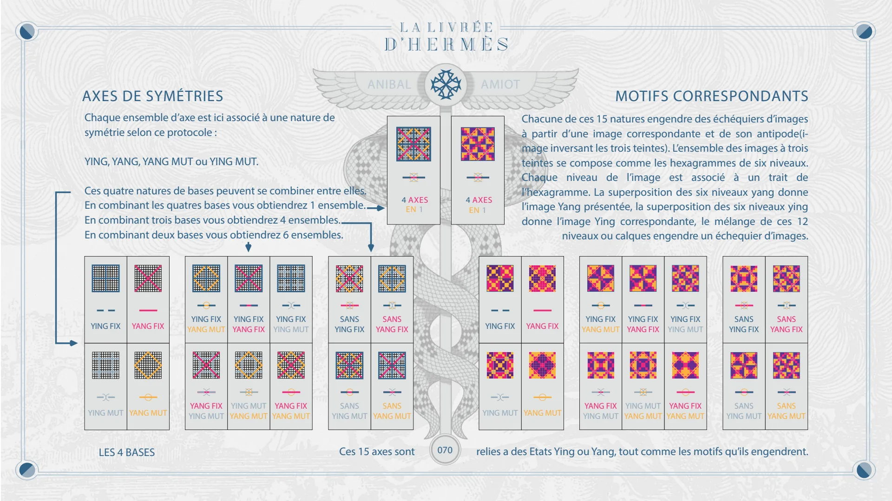
AXES DE SYMÉTRIES
Chaque ensemble d’axe est ici associé à une nature de symétrie selon ce protocole :
ANIBAL
YING, YANG, YANG MUT ou YING MUT.
Ces quatre natures de bases peuvent se combiner entre elles. En combinant les quatres bases vous obtiendrez 1 ensemble. En combinant trois bases vous obtiendrez 4 ensembles. En combinant deux bases vous obtiendrez 6 ensembles.
YING FIX
YANG FIX
YING FIX YANG MUT
YING FIX YANG FIX
YING FIX YING MUT
SANS YING FIX
4 AXES EN 1
SANS YANG FIX
AMIOT
4 AXES EN 1
YING FIX
MOTIFS CORRESPONDANTS
Chacune de ces 15 natures engendre des échéquiers d’images à partir d’une image correspondante et de son antipode(image inversant les trois teintes). L’ensemble des images à trois teintes se compose comme les hexagrammes de six niveaux. Chaque niveau de l’image est associé à un trait de l’hexagramme. La superposition des six niveaux yang donne l’image Yang présentée, la superposition des six niveaux ying donne l’image Ying correspondante, le mélange de ces 12 niveaux ou calques engendre un échequier d’images.
YANG FIX
YING FIX YANG MUT
YING FIX YANG FIX
YING FIX YING MUT
SANS YING FIX
SANS YANG FIX
YING MUT
YANG MUT
LES 4 BASES
YANG FIX YING MUT
YING MUT YANG MUT
YANG FIX YANG MUT
SANS YING MUT
SANS YANG MUT
YING MUT
YANG MUT
YANG FIX YING MUT
YING MUT YANG MUT
YANG FIX YANG MUT
SANS YING MUT
SANS YANG MUT
Ces 15 axes sont relies a des Etats Ying ou Yang, tout comme les motifs qu’ils engendrent.
070
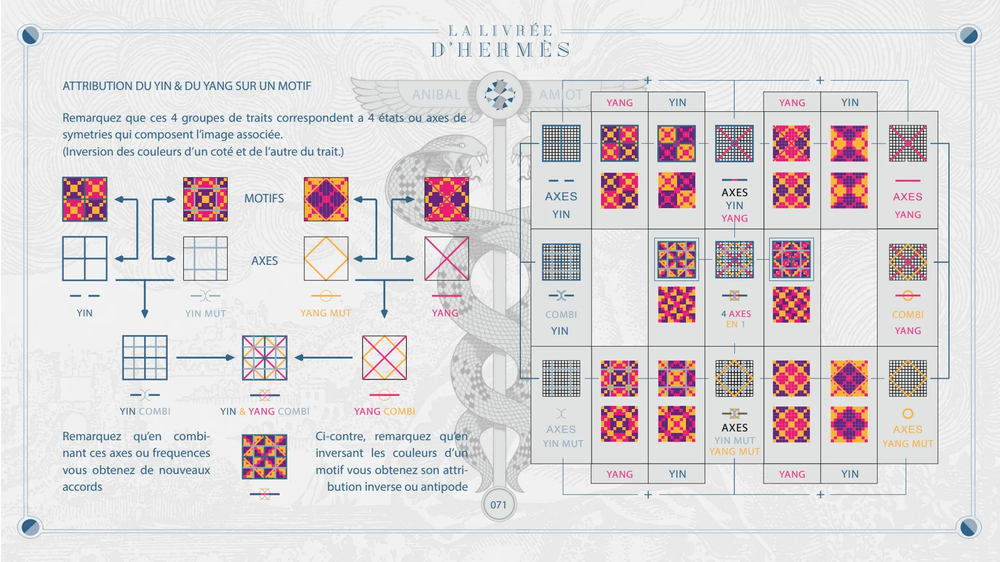
ATTRIBUTION DU YIN & DU YANG SUR UN MOTIF
ANIBAL
Remarquez que ces 4 groupes de traits correspondent a 4 états ou axes de symetries qui composent l’image associée. (Inversion des couleurs d’un coté et de l’autre du trait.)
MOTIFS
AXES
AMIOT
AXES
YIN
YANG
+ YIN
AXES YIN YANG
YANG
+ YIN
AXES
YANG
YIN
YIN MUT
YIN COMBI
Remarquez qu’en combinant ces axes ou frequences vous obtenez de nouveaux accords
YANG MUT
YANG
YIN & YANG COMBI
YANG COMBI
Ci-contre, remarquez qu’en inversant les couleurs d’un motif vous obtenez son attribution inverse ou antipode
COMBI YIN
AXES
YIN MUT
YANG
+ YIN
4 AXES EN 1
AXES YIN MUT YANG MUT
YANG
+ YIN
COMBI YANG
AXES
YANG MUT
071
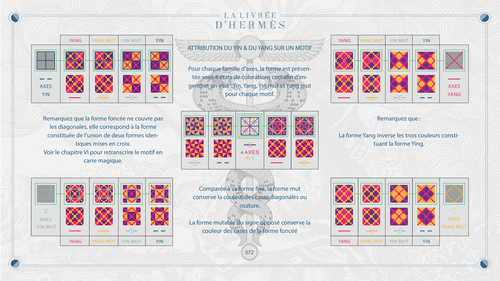
ATTRIBUTION DU YIN & DU YANG SUR UN MOTIF
YANG
YANG MUT
YIN MUT
YIN
AXES YIN
Remarquez que la forme foncée ne couvre pas les diagonales, elle correspond à la forme constituée de l’union de deux formes identiques mises en croix. Voir le chapitre VI pour retranscrire le motif en carre magique.
AXES YIN MUT
Pour chaque famille d’axes, la forme est présentée sous 4 états de colorations ceci afin d’engendrer un etat : Yin, Yang, Yin mut et Yang mut pour chaque motif.
4 AXES
IN 1
Comparée à sa forme fixe, la forme mut conserve la couleur des cases diagonales ou osature.
La forme mutable du signe opposé conserve la couleur des cases de la forme foncéé
YANG
YANG MUT
YIN MUT
YIN
AXES YANG
Remarquez que :
La forme Yang inverse les trois couleurs constituant la forme Ying.
AXES YANG MUT
YANG
YANG MUT
YIN MUT
YIN 072
YANG
YANG MUT
YIN MUT
YIN
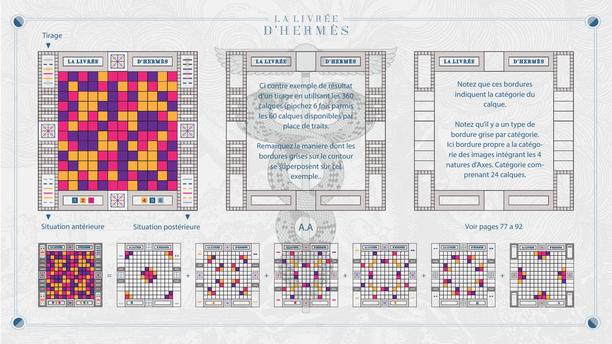
Tirage
Ci contre exemple de résultat d’un tirage en utilisant les 360 calques (piochez 6 fois parmis les 60 calques disponibles par place de traits.
Remarquez la maniere dont les bordures grises sur le contour se superposent sur cet exemple..
Notez que ces bordures indiquent la catégorie du calque.
Notez qu’il y a un type de bordure grise par catégorie. Ici bordure propre a la catégorie des images intégrant les 4 natures d’Axes. Catégorie comprenant 24 calques.
1 2 3 Situation antérieure 1 2 3 4 5 6 = 1 4 5 6 Situation postérieure + 2 + 3 A.A + 4 +
Voir pages 77 a 92
5 + 6
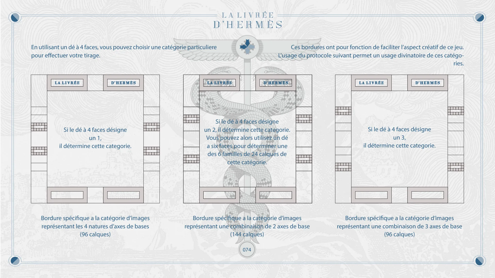
En utilisant un dé à 4 faces, vous pouvez choisir une catégorie particuliere pour effectuer votre tirage.
A.A
Ces bordures ont pour fonction de faciliter l’aspect créatif de ce jeu. L’usage du protocole suivant permet un usage divinatoire de ces catégories.
Si le dé à 4 faces désigne un 1, il détermine cette categorie.
Bordure spécifique a la catégorie d’images représentant les 4 natures d’axes de bases (96 calques)
Si le dé à 4 faces désigne un 2, il détermine cette categorie. Vous pouvez alors utilisez un dé a six faces pour déterminer une des 6 familles de 24 calques de cette catégorie.
Bordure spécifique a la catégorie d’images représentant une combinaison de 2 axes de base (144 calques)
Si le dé à 4 faces désigne un 3, il détermine cette categorie.
Bordure spécifique a la catégorie d’images représentant une combinaison de 3 axes de base (96 calques)
074
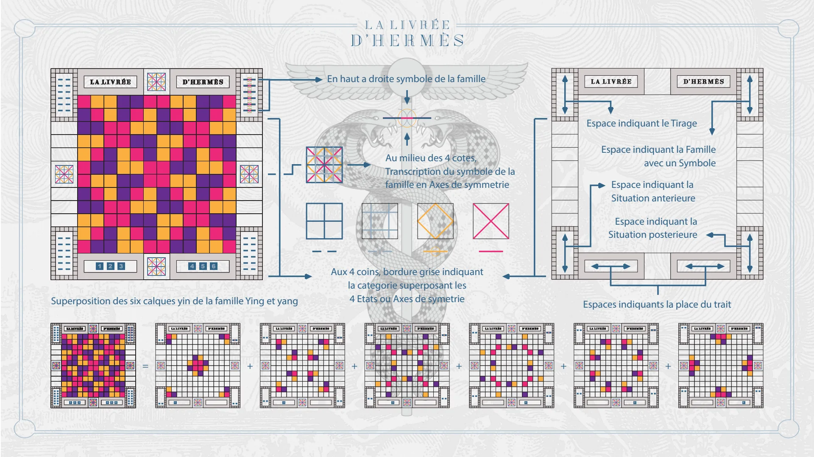
1 2 3 4 5 6
Superposition des six calques yin de la famille Ying et yang
En haut a droite symbole de la famille
Au milieu des 4 cotes, Transcription du symbole de la famille en Axes de symmetrie
Aux 4 coins, bordure grise indiquant la categorie superposant les 4 Etats ou Axes de symetrie
Espace indiquant le Tirage
Espace indiquant la Famille avec un Symbole
Espace indiquant la Situation anterieure
Espace indiquant la Situation posterieure
Espaces indiquants la place du trait
1 2 3 4 5 6 = 1 + 2 + 3 + 4 + 5 + 6
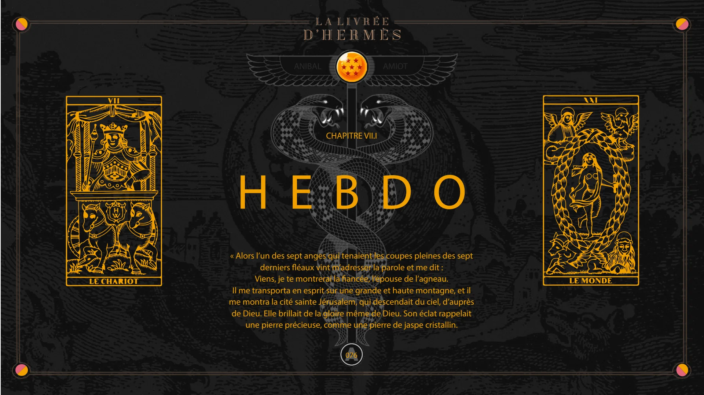
CHAPITRE VII.I
HEBDO
ANIBAL
AMIOT
« Alors l’un des sept anges qui tenaient les coupes pleines des sept derniers fléaux vint m’adresser la parole et me dit : Viens, je te montrerai la fiancée, l’épouse de l’agneau. Il me transporta en esprit sur une grande et haute montagne, et il me montra la cité sainte Jérusalem, qui descendait du ciel, d’auprès de Dieu. Elle brillait de la gloire même de Dieu. Son éclat rappelait une pierre précieuse, comme une pierre de jaspe cristallin.
A 076
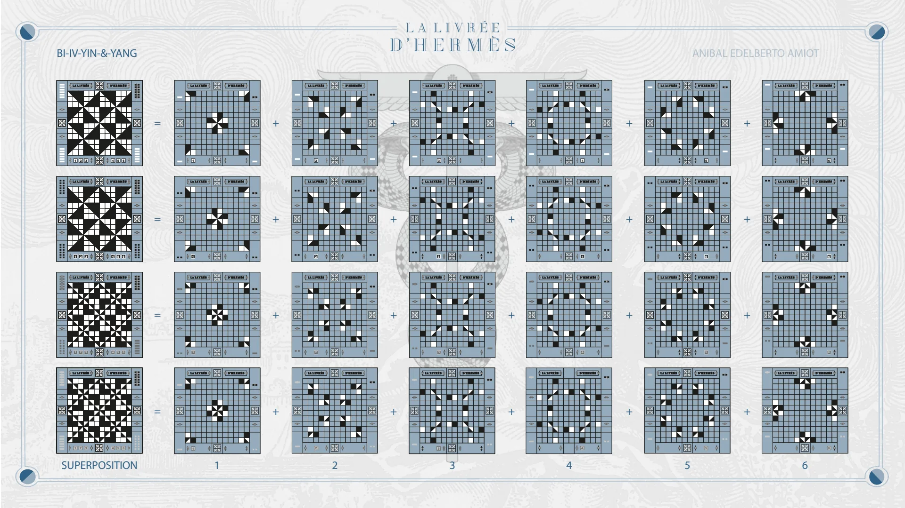
BI-IV-YIN-&-YANG
1 2 3 4 5 6 1 2 3 4 5 6 1 2 3 4 5 6 1 2 3 4 5 6
SUPERPOSITION
= = = = 1 1 1 1 1 + + + + 2 2 2 2 2 + + + + 3 3 3 3 3 + + + + 4 4 4 4 4 + + + + 5
ANIBAL EDELBERTO AMIOT
5 5 5 5 + + + + 6 6 6 6 6
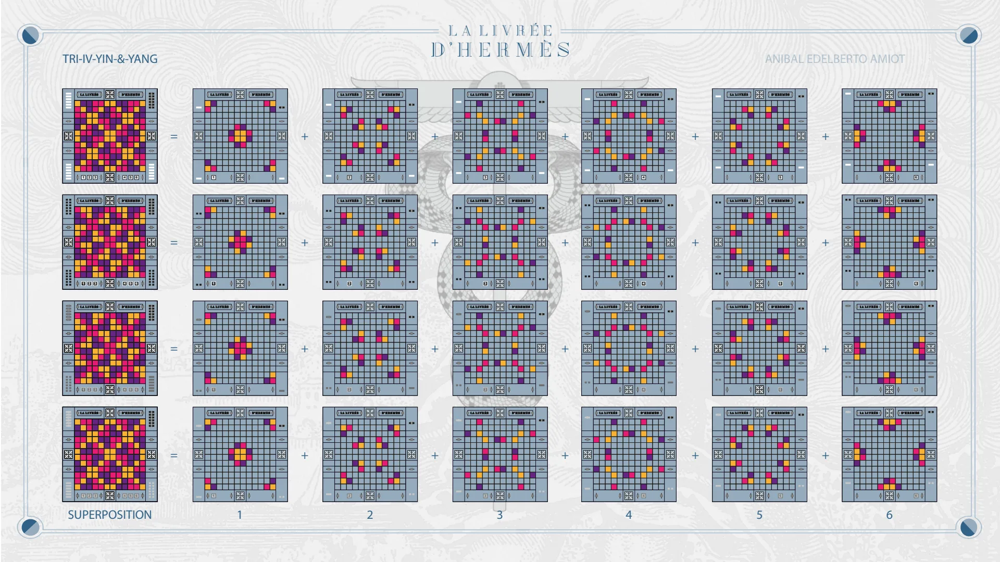
TRI-IV-YIN-&-YANG
1 2 3 4 5 6 1 2 3 4 5 6 1 2 3 4 5 6 1 2 3 4 5 6
SUPERPOSITION
= = = = 1 1 1 1 1 + + + + 2 2 2 2 2 + + + + 3 3 3 3 3 + + + + 4 4 4 4 4 + + + + 5
ANIBAL EDELBERTO AMIOT
5 5 5 5 + + + + 6 6 6 6 6
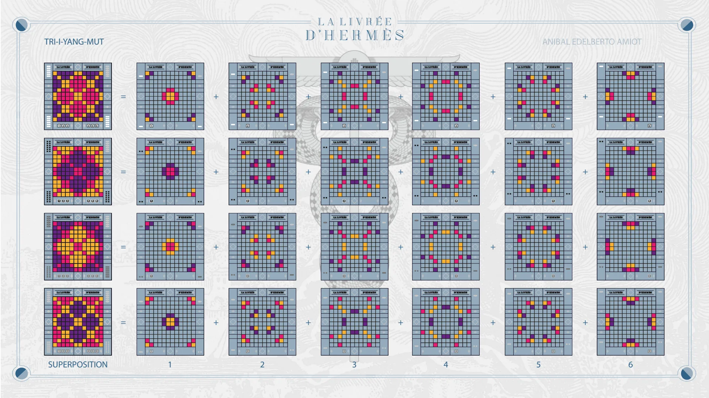
TRI-I-YANG-MUT
1 2 3 4 5 6 1 2 3 4 5 6 1 2 3 4 5 6 1 2 3 4 5 6
SUPERPOSITION
= = = = 1 1 1 1 1 + + + + 2 2 2 2 2 + + + + 3 3 3 3 3 + + + + 4 4 4 4 4 + + + + 5
ANIBAL EDELBERTO AMIOT
5 5 5 5 + + + + 6 6 6 6 6
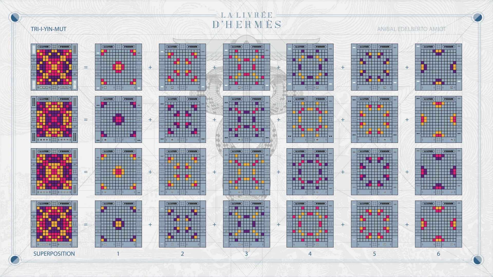
TRI-I-YIN-MUT
1 2 3 4 5 6 1 2 3 4 5 6 1 2 3 4 5 6 1 2 3 4 5 6
SUPERPOSITION
= = = = 1 1 1 1 1 + + + + 2 2 2 2 2 + + + + 3 3 3 3 3 + + + + 4 4 4 4 4 + + + + 5
ANIBAL EDELBERTO AMIOT
5 5 5 5 + + + + 6 6 6 6 6
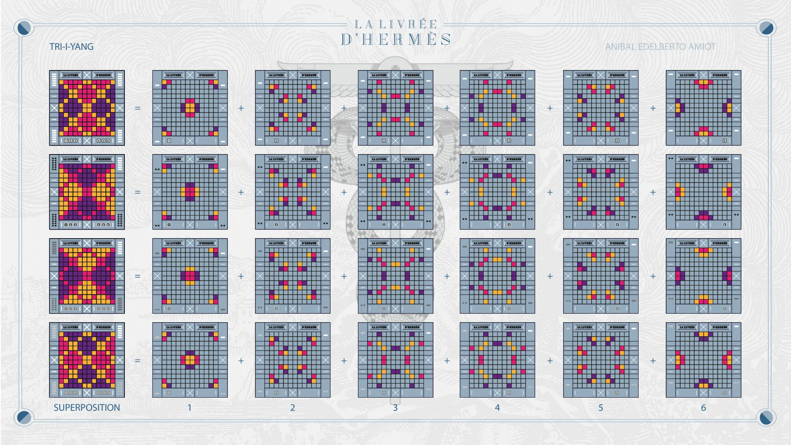
TRI-I-YANG
1 2 3 4 5 6 1 2 3 4 5 6 1 2 3 4 5 6 1 2 3 4 5 6
SUPERPOSITION
= = = = 1 1 1 1 1 + + + + 2 2 2 2 2 + + + + 3 3 3 3 3 + + + + 4 4 4 4 4 + + + + 5
ANIBAL EDELBERTO AMIOT
5 5 5 5 + + + + 6 6 6 6 6
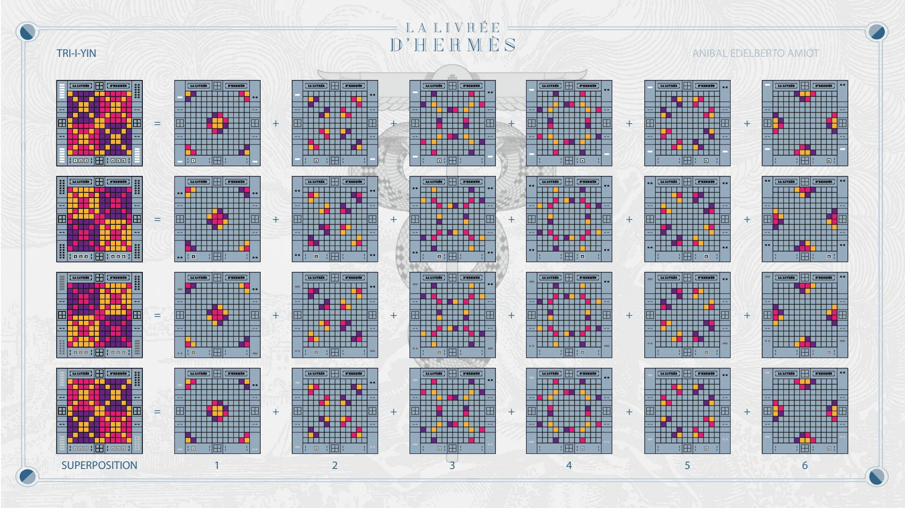
TRI-I-YIN
1 2 3 4 5 6 1 2 3 4 5 6 1 2 3 4 5 6 1 2 3 4 5 6
SUPERPOSITION
= = = = 1 1 1 1 1 + + + + 2 2 2 2 2 + + + + 3 3 3 3 3 + + + + 4 4 4 4 4 + + + + 5
ANIBAL EDELBERTO AMIOT
5 5 5 5 + + + + 6 6 6 6 6
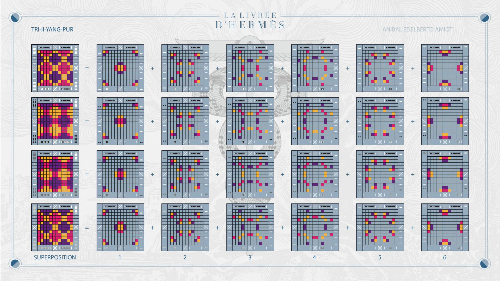
TRI-II-YANG-PUR
1 2 3 4 5 6 1 2 3 4 5 6 1 2 3 4 5 6 1 2 3 4 5 6
SUPERPOSITION
= = = = 1 1 1 1 1 + + + + 2 2 2 2 2 + + + + 3 3 3 3 3 + + + + 4 4 4 4 4 + + + + 5
ANIBAL EDELBERTO AMIOT
5 5 5 5 + + + + 6 6 6 6 6
TRI-II-YIN-PUR
1 2 3 4 5 6 1 2 3 4 5 6 1 2 3 4 5 6 1 2 3 4 5 6
SUPERPOSITION
= = = = 1 1 1 1 1 + + + + 2 2 2 2 2 + + + + 3 3 3 3 3 + + + + 4 4 4 4 4 + + + + 5
ANIBAL EDELBERTO AMIOT
5 5 5 5 + + + + 6 6 6 6 6
TRI-II-FIX-PUR
1 2 3 4 5 6 1 2 3 4 5 6 1 2 3 4 5 6 1 2 3 4 5 6
SUPERPOSITION
= = = = 1 1 1 1 1 + + + + 2 2 2 2 2 + + + + 3 3 3 3 3 + + + + 4 4 4 4 4 + + + + 5
ANIBAL EDELBERTO AMIOT
5 5 5 5 + + + + 6 6 6 6 6
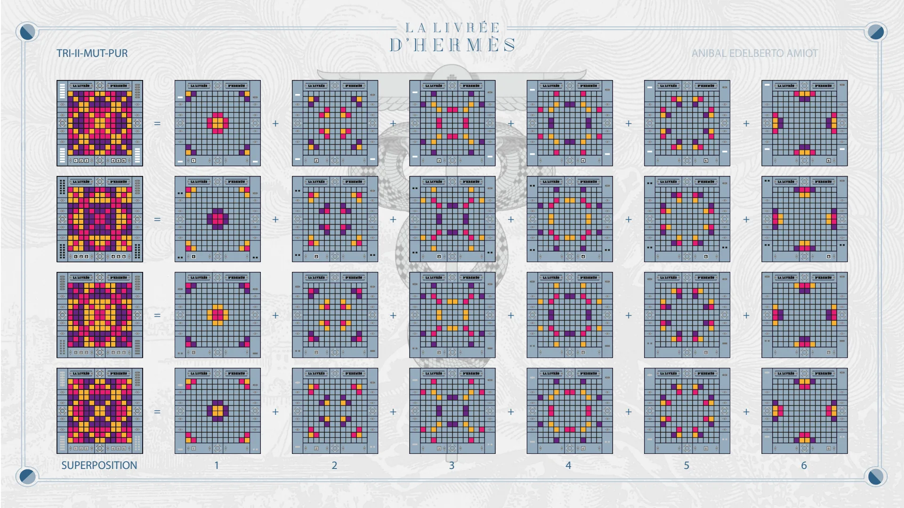
TRI-II-MUT-PUR
1 2 3 4 5 6 1 2 3 4 5 6 1 2 3 4 5 6 1 2 3 4 5 6
SUPERPOSITION
= = = = 1 1 1 1 1 + + + + 2 2 2 2 2 + + + + 3 3 3 3 3 + + + + 4 4 4 4 4 + + + + 5
ANIBAL EDELBERTO AMIOT
5 5 5 5 + + + + 6 6 6 6 6
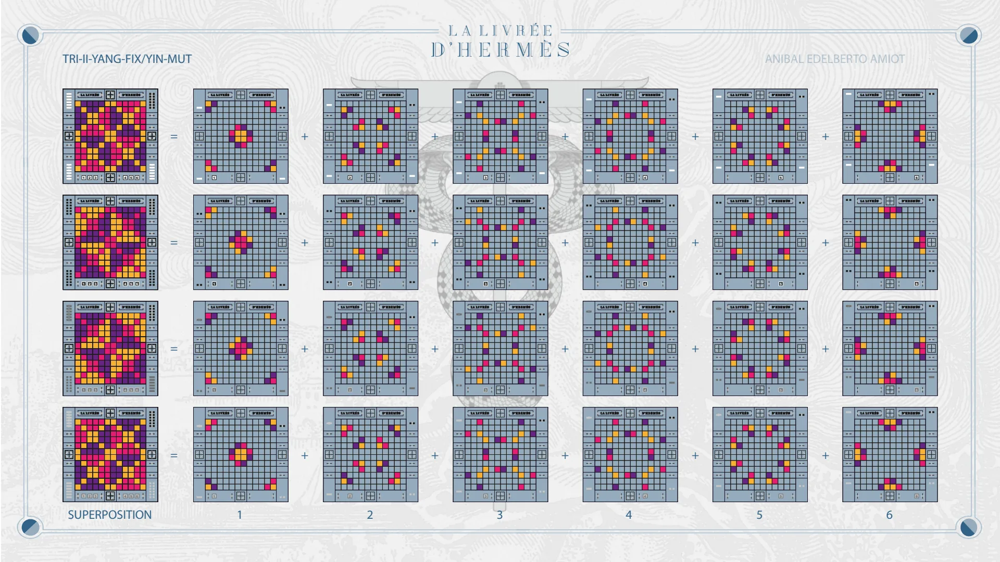
TRI-II-YANG-FIX/YIN-MUT
1 1 1 1 2 2 2 2 3 3 3 3 4 4 4 4 5 5 5 5 6 6 6 6 1 2 3 4 5 6 1 2 3 4 5 6 1 2 3 4 5 6
SUPERPOSITION
= = = = 1 1 1 1 1 + + + + 2 2 2 2 2 + + + + 3 3 3 3 3 + + + + 4 4 4 4 4 + + + + 5
ANIBAL EDELBERTO AMIOT
5 5 5 5 + + + + 6 6 6 6 6
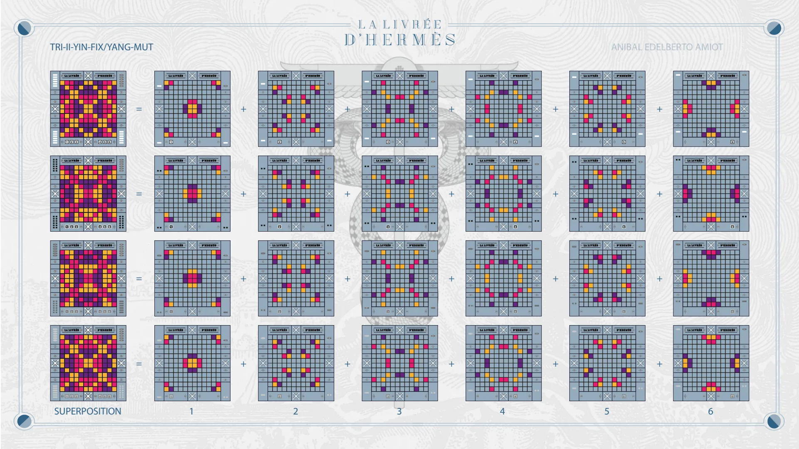
TRI-II-YIN-FIX/YANG-MUT
1 2 3 4 5 6 1 2 3 4 5 6 1 2 3 4 5 6 1 2 3 4 5 6
SUPERPOSITION
= = = = 1 1 1 1 1 + + + + 2 2 2 2 2 + + + + 3 3 3 3 3 + + + + 4 4 4 4 4 + + + + 5
ANIBAL EDELBERTO AMIOT
5 5 5 5 + + + + 6 6 6 6 6
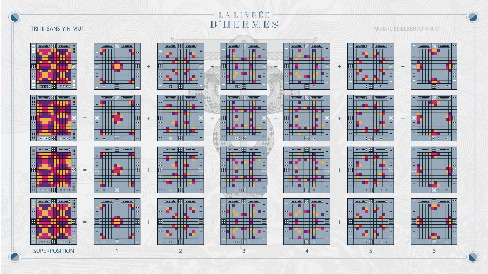
TRI-III-SANS-YIN-MUT
1 2 3 4 5 6 1 2 3 4 5 6 1 2 3 4 5 6 1 2 3 4 5 6
SUPERPOSITION
= = = = 1 1 1 1 1 + + + + 2 2 2 2 2 + + + + 3 3 3 3 3 + + + + 4 4 4 4 4 + + + + 5
ANIBAL EDELBERTO AMIOT
5 5 5 5 + + + + 6 6 6 6 6
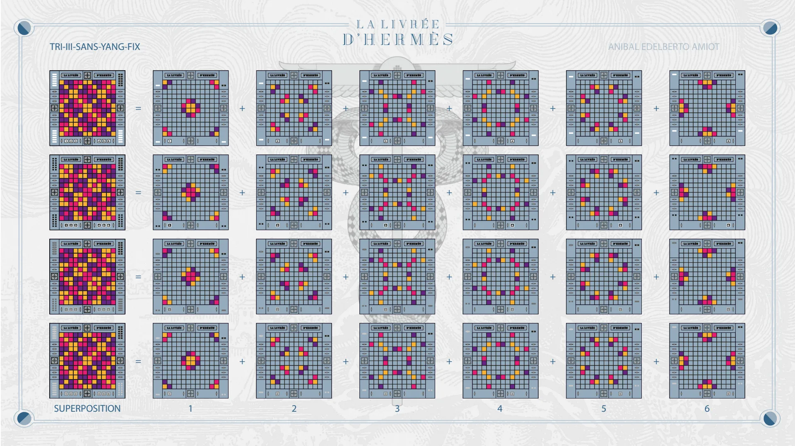
TRI-III-SANS-YANG-FIX
1 2 3 4 5 6 1 2 3 4 5 6 1 2 3 4 5 6 1 2 3 4 5 6
SUPERPOSITION
= = = = 1 1 1 1 1 + + + + 2 2 2 2 2 + + + + 3 3 3 3 3 + + + + 4 4 4 4 4 + + + + 5
ANIBAL EDELBERTO AMIOT
5 5 5 5 + + + + 6 6 6 6 6
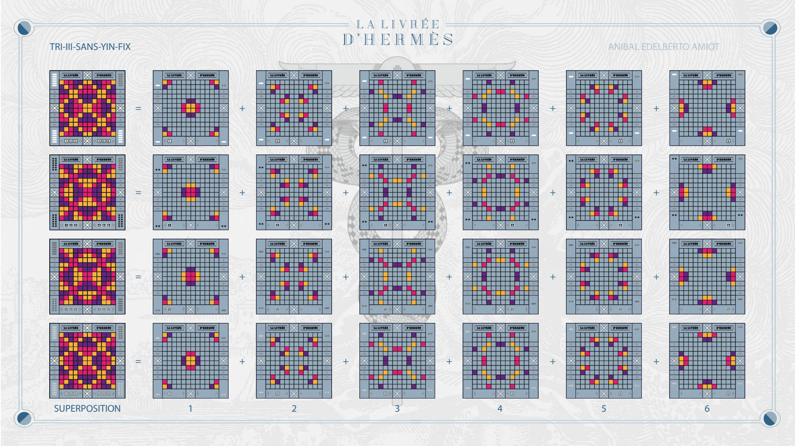
TRI-III-SANS-YIN-FIX
1 2 3 4 5 6 1 2 3 4 5 6 1 2 3 4 5 6 1 2 3 4 5 6
SUPERPOSITION
= = = = 1 1 1 1 1 + + + + 2 2 2 2 2 + + + + 3 3 3 3 3 + + + + 4 4 4 4 4 + + + + 5
ANIBAL EDELBERTO AMIOT
5 5 5 5 + + + + 6 6 6 6 6
TRI-III-SANS-YANG-MUT
1 2 3 4 5 6 1 2 3 4 5 6 1 2 3 4 5 6 1 2 3 4 5 6
SUPERPOSITION
= = = = 1 1 1 1 1 + + + + 2 2 2 2 2 + + + + 3 3 3 3 3 + + + + 4 4 4 4 4 + + + + 5
ANIBAL EDELBERTO AMIOT
5 5 5 5 + + + + 6 6 6 6 6
© Anibal Edelberto Amiot. CC BY-NC 4.0 — creativecommons.org/licenses/by-nc/4.0 · DOI 10.5281/zenodo.22722485